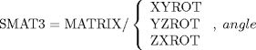
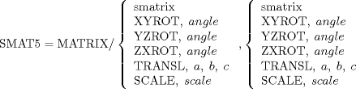
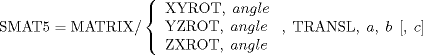
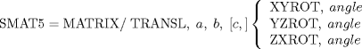
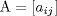
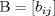
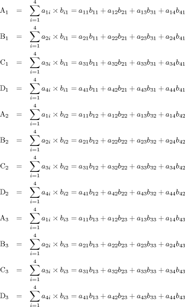

| 3.14. The Matrix (MATRIX) Definitions | ||
|---|---|---|
 | Chapter 3. Geometric Statements in APT |  |
| 3.14. The Matrix (MATRIX) Definitions | ||
|---|---|---|
| | Chapter 3. Geometric Statements in APT | |
A matrix is a rectangular array of numbers defining the three simultaneous equations that represent the relationship between two coordinate systems.
SMAT1 = MATRIX/ a1, b1, c1, d1, a2, b2, c2, d2, a3, b3, c3, d3
where a1, b1, etc. are the coefficients of the equations:
a1x + b1y + c1z - d1 = 0
a2x + b2y + c2z - d2 = 0
a3x + b3y + c3z - d3 = 0
which define three mutually perpendicular planes of the new coordinate system.
SMAT2 = MATRIX/ TRANSL, d1, d2, d3
![[Note]](images/note.png) | Note |
|---|---|
d3 may be omitted. If it is omitted, the APT processor assumes d3 = 0. |
The parameters d1, d2 and d3 are the coordinates of the origin of the new coordinate system expressed in terms of the old system.
The format will generate the following canonical form:
1, 0, 0, d1, 0, 1, 0, d2, 0, 0, 1, d3

| Note |
|---|---|
angle is in degrees |
Rotation in the XY plane, where positive rotation is from the X axis to the Y axis (counter clockwise)
M1 = MATRIX/ XYROT, A
The canonical form generally will be:
COS A, -SIN A, 0, 0, SIN A, COS A, 0, 0, 0, 0, 1, 0
Rotation in the YZ plane, where positive rotation is from the Y axis to the Z axis (counter clockwise)
M2 = MATRIX/ YZROT, B
The canonical form generally will be:
1, 0, 0, 0, 0, COS B, -SIN B, 0, 0, SIN B, COS B, 0
Rotation in the ZX plane, where positive rotation is from the Z axis to the X axis (counter clockwise)
M3 = MATRIX/ ZXROT, C
The canonical form generally will be:
COS C, 0, SIN C, 0, 0, 1, 0, 0, -SIN C, 0, COS C, 0
As shown in Section 3.14.5 a MATRIX can be defined as a combination (Multiplication) of matrices. Because matrix operations of this type are not commutative, the order of the operation becomes quite important. That is, if M and N are matrices, in general:
M x N ≠ N x M
To illustrate, compare the result of performing a rotation followed by a translation with the result obtained by first performing the translation and then the rotation.
If matrix A is multiplied into matrix B, the resultant matrix C will have the effect of first performing the B operations and then performing the A operations. For example, let A be a translation matrix and B be a rotation matrix. Then:
Atranslation x Brotation = C
Matrix C will have the effect of first a rotation and then a translation. On the other hand, if the matrix multiplication is reversed:
Arotation x Btranslation = C
C will first translate and then rotate. Notice that the effect of a matrix multiplication can be thought of as being the opposite of the order of multiplication.

The order of matrix multiplication for most of the combinations above is left to right. For example:
M1 = MATRIX/ MATR, MATT
where MATR is a rotation matrix and MATT is a translation matrix will yield:
M1 = MATR x MATT
There are exceptions to this general rule. The formats given below define the cases in which the order of matrix multiplication is right to left rather than left to right.


All other formats result in a matrix multiplication order of left to right.
Assume matrix  is multiplied into matrix , where:
a41 = b41 = 0
a42 = b42 = 0
a43 = b43 = 0
a44 = b44 = 1
The canonical form generated will be:

Obviously, the order of the matrices given in this format is quite important.
SMAT6 = MATRIX/ INVERS, smatrix
If the input matrix is defined as:
a1, b1, c1, d1, a2, b2, c2, d2, a3, b3, c3, d3,
the canonical form generated will be:
A1 = a1
B1 = a2
C1 = a3
D1 = -(a1d1 + a2d2 + a3d3)
A2 = b1
B2 = b2
C2 = b3
D2 = -(b1d1 + b2d2 + b3d3)
A3 = c1
B3 = c2
C3 = c3
D3 = -(c1d1 + c2d2 + c3d3)
SMAT7 = MATRIX/ splane, splane, splane
If the canonical forms of the three planes are:
PLAN1: A1, B1, C1, D1
PLAN2: A2, B2, C2, D2
PLAN3: A3, B3, C3, D3
the canonical form generated will be:
A1, A2, A3, -(A1D1 = A2D2 + A3D3),
B1, B2, B3, -(B1D1 = B2D2 + B3D3),
C1, C2, C3, -(C1D1 = C2D2 + C3D3)
SMAT8 = MATRIX/ SCALE, s
The canonical form generated will be:
s, 0, 0, 0, 0, s, 0, 0, 0, 0, s, 0
SMAT = MATRIX/ spoint, svector1, svector2
Where svector1 represents the new X axis and svector2 is in the first or second quadrant.
| |  | |
| 3.13. The Vector (VECTOR) Definitions |  | 3.15. The Sphere (SPHERE) Definitions |